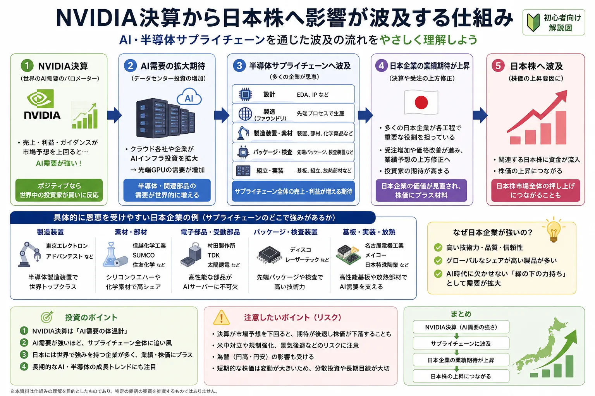

話題・トレンド
なぜ米国企業の決算で日本株が動くの？NVIDIAと半導体株の連動を初心者向けに解説
米国の大手企業が決算を発表した翌朝、日本の株式市場で半導体関連株が大きく動くことがあります。 「米国企業1社の話なのに、なぜ日本株まで動くの？」と疑問に感じる人も多いでしょう。
特にNVIDIAのようにAI・データセンター需要と深く関わる企業の決算は、その会社だけの業績ではなく、 世界のAI投資や半導体需要がどれくらい強いのかを考える材料として注目されます。 この記事では、決算から半導体サプライチェーンを通じて日本株へ影響が広がる仕組みを初心者向けに整理します。
Overview
NVIDIA決算から日本株へ影響が広がる仕組み
最初に全体像を確認しましょう。ポイントは、NVIDIAそのものの株価ではなく、 決算によって世界のAI・半導体需要に対する見方が変わることです。

NVIDIAなどが業績や今後の見通しを発表
データセンター投資や設備投資への期待が変わる
装置・材料・部品などの業績期待も変化
買い・売りが広がり日経平均にも影響する場合がある
NVIDIAの決算が良ければ日本株も必ず上がる、という単純な関係ではありません。 株価は市場予想、将来見通し、金利、為替、すでに株価へ織り込まれている期待などを含めて動きます。
Global Earnings
なぜ米国企業の決算で日本株が動くの？
世界の株式市場は、それぞれ独立して動いているわけではありません。 特に半導体やAI、自動車など世界規模で事業がつながっている産業では、 海外企業の業績が日本企業の将来の売上や受注を考える材料になることがあります。
需要の手掛かり
大手企業の決算が業界全体の需要を映す
大手半導体企業の売上高や今後の見通しが強ければ、 AIサーバーやデータセンターへの投資が続いているのではないか、と市場が考えることがあります。 その結果、関連する装置・材料・部品企業にも需要が続くという期待が広がります。
期待の変化
株価は「今」より将来への期待で動く
株価は現在の業績だけではなく、数か月後・数年後に企業がどれくらい利益を出せそうかという期待も反映します。 米国企業の決算をきっかけに業界全体の将来予想が変われば、日本企業の株価も動くことがあります。
決算そのものの基本は 「決算発表とは？なぜ株価が大きく動くの？」 で詳しく解説しています。 株価がニュースや業績で動く基本的な仕組みは 「株価はなぜ上下するのか？」 も参考になります。
NVIDIA
NVIDIAとは？
NVIDIAは米国の半導体・コンピューティング企業で、 AI向けの計算処理やデータセンター分野で世界的に注目されています。 NVIDIAそのものへの投資を勧めるためではなく、 なぜ同社の決算が世界の半導体市場を見る重要材料になりやすいのかを理解しておきましょう。
GPU
GPUはもともと画像処理を得意とするプロセッサとして発展しました。 多数の計算を同時並行で処理しやすい特徴があり、現在はAIの学習・推論など大量の計算が必要な用途でも利用されています。
AI
生成AIなどの普及によって計算能力への需要が増えると、 AI向け半導体だけでなくサーバー、ネットワーク、電力設備、冷却設備など幅広い分野へ需要が広がる場合があります。
データセンター
AIサービスを動かすには大規模なデータセンターが必要です。 NVIDIAのデータセンター関連売上や将来見通しは、AIインフラ投資の強さを考える材料として注目されています。
2026年8月のNVIDIA決算
NVIDIAは米国時間2026年8月26日、2027年度第2四半期の決算を発表しました。 売上高は962億ドルで前年同期比106％増、 データセンター部門の売上高は890億ドルで前年同期比117％増となりました。 次の第3四半期については売上高1,080億ドル±2％の見通しを示しています。
こうした数字はNVIDIAだけの業績を見るためのものではありません。 市場では、AI向け計算需要やデータセンター投資がどこまで続くのか、 そして半導体サプライチェーン全体の需要がどう変化するのかを考える材料にもなります。
重要： 売上高が大幅に伸びているからといって、NVIDIAや日本の関連株が必ず上昇するわけではありません。 株価は「実際の数字」だけでなく、市場が事前にどこまで期待していたかによっても動きます。
Supply Chain
半導体サプライチェーンとは？
半導体は、一つの会社が原材料から完成品まで全てを作っているわけではありません。 設計から製造、材料、装置、検査、組み立てまで多くの企業が分担しており、 さらに完成した半導体はデータセンターやスマートフォン、自動車などへ使われます。
設計
半導体の機能を設計する
どのような計算を行うか、どの程度の性能や消費電力にするかなど、半導体の基本設計を行います。
製造
設計された半導体を実際に作る
高度な工場と製造技術を使い、シリコンウエハー上へ微細な回路を形成します。
製造装置
半導体工場を支える装置
成膜、洗浄、露光、エッチングなど多くの工程で専用の半導体製造装置が必要になります。
材料
製造に必要な素材や薬品
シリコンウエハー、フォトレジスト、特殊ガス、化学材料など多数の材料が使われます。
検査・組み立て
品質を確認し製品として仕上げる
微細な不良がないかを調べる検査工程や、半導体チップを実際に使える形へ仕上げる工程も重要です。
AIインフラ
データセンターまで需要が広がる
AI向け半導体を動かすには、サーバー、通信設備、電力、冷却設備なども必要です。 AI投資の拡大は半導体だけでなく周辺産業へ波及する場合があります。
このように半導体産業は世界中の企業が役割を分担しています。 そのため、米国企業の需要が強くなると、直接・間接的につながる他国の企業にも業績期待が広がることがあります。
Japan
なぜ日本企業まで影響を受けるの？
日本には半導体そのものだけでなく、半導体製造を支える装置・材料・電子部品・精密機器などを手掛ける企業があります。 そのため世界的に半導体設備投資が増える、あるいは減るという見方が広がると、 日本企業の将来の受注や利益予想も変化することがあります。
半導体製造装置
世界で半導体工場への設備投資が増えると、製造工程で使われる装置への需要にも注目が集まります。
半導体材料
半導体の生産量が増えれば、ウエハーや化学材料など製造に必要な素材の需要にも影響する可能性があります。
電子部品
AIサーバーや通信設備の拡大は、半導体だけでなく周辺の電子部品需要へ広がる場合があります。
精密機器
高度な半導体製造では精密な測定・検査技術が必要となるため、関連する企業の受注期待が変化することがあります。
データセンター関連
AIインフラには大量の電力や冷却設備、通信機器などが必要です。AI投資の拡大が周辺分野へ波及する場合があります。
投資家心理
直接の取引関係がなくても、「AI・半導体関連」という同じテーマとして投資資金が動き、同じ方向へ株価が動く場合があります。
半導体株そのものの基本は、 「半導体株とは？なぜ日経平均や世界の株価を大きく動かすのか」 で詳しく整理しています。
Nikkei Average
NVIDIA決算と日経平均の関係
NVIDIAの決算が直接日経平均を計算しているわけではありません。 しかしNVIDIA決算を受けて日本の半導体関連株が大きく動き、 その中に日経平均への影響が大きい銘柄が含まれていると、指数全体も大きく動く場合があります。
日経平均は「株価平均型」
日経平均は225銘柄から構成される指数ですが、時価総額の大きさだけで決まるわけではありません。 株価水準の高い「値がさ株」の値動きが指数へ強く反映されやすい特徴があります。
半導体関連の値がさ株が動く
日本の半導体関連株の中には日経平均への寄与度が大きくなりやすい銘柄があります。 それらが同時に上昇・下落すると、日経平均の値動きが大きく見えることがあります。
NVIDIA → 日本の半導体株 → 日経平均
NVIDIA決算によってAI・半導体需要への期待が変化し、日本の関連株へ売買が広がり、 その結果として日経平均にも影響するという順番で考えると分かりやすくなります。
| 比較項目 | 日経平均 | TOPIX |
|---|---|---|
| 基本的な特徴 | 株価平均型 | 時価総額加重型 |
| 影響を受けやすい銘柄 | 株価水準の高い値がさ株 | 時価総額の大きい企業 |
| 半導体株急変時 | 一部の半導体関連値がさ株の影響が大きく出る場合がある | より幅広い日本株の動きを確認しやすい |
| 初心者の見方 | 指数上昇が一部銘柄中心ではないかを見る | 市場全体へ上昇・下落が広がっているかを見る |
※ スマートフォンでは横にスクロールできます。
TOPIXの仕組みは 「TOPIXとは？」 で詳しく解説しています。 日経平均が大きく上昇・下落していても、日本株全体が同じだけ動いているとは限らない点に注意しましょう。
Not Always
好決算なら日本株も必ず上がる？
必ずしも上がりません。 「好決算」という言葉だけで株価の方向を予想するのが難しいのは、 株価が過去の数字ではなく市場が事前に期待していた数字との比較で動くことが多いからです。
市場予想
期待を上回ったか
売上高や利益が増えていても、市場がさらに高い数字を予想していれば「期待ほどではなかった」と受け止められる場合があります。
業績見通し
未来の数字が重視される
今回の決算が良くても、次の四半期や今後の需要見通しが弱ければ株価が下落する場合があります。
AI需要
成長速度も見られる
AI需要が増えているかだけではなく、「どの程度の速度で増えているのか」も市場の評価材料になります。
織り込み
期待がすでに株価へ入っている
決算前に株価が大きく上昇している場合、好業績への期待がすでに株価へ反映されていることがあります。
利益確定
好材料をきっかけに売られることも
決算まで株価が上昇していた場合、好決算を機に利益を確定する売りが増えることがあります。
外部環境
金利・為替・世界景気
企業の決算が良くても、金利上昇、為替変動、景気悪化など市場全体の材料が株価の重しになる場合があります。
企業が公表する業績予想の変更については、 「上方修正・下方修正とは？」 でも詳しく解説しています。 また、成長株と金利の関係は 「金利上昇とは？」 も参考になります。
Market Expectations
「市場予想」が重要なのはなぜ？
決算ニュースを見るときに初心者が特に覚えておきたいのが、 良い数字かどうかと、株価が上がるかどうかは別の問題という点です。
決算前から強い業績を予想
売上高・利益そのものは増加
市場予想を下回る、または見通しが物足りない
高すぎた期待が修正される
例：売上高が20％増でも下落する場合
企業の売上高が前年より20％増えたとします。 数字だけ見れば好調に見えます。 しかし市場が30％増を期待していたなら、 投資家は「良いけれど、期待していたほどではない」と判断する可能性があります。
逆に数字が悪化していても上昇する場合がある
利益が前年より減っていても、市場がさらに大幅な減益を想定していた場合には、 「想定より悪くなかった」と判断されて株価が上昇するケースもあります。
株価は期待とのギャップに反応する
決算を見るときは「売上高が増えた」「過去最高益だった」という見出しだけではなく、 市場予想との違いと、会社が示した今後の見通しまで確認することが重要です。
良い決算＝必ず株高ではありません。 株価は決算発表前から未来への期待を織り込みながら動いているため、 「実績」と「期待」の差を考える必要があります。
Global Markets
米国株と日本株はなぜ連動するの？
半導体に限らず、現在の金融市場では投資資金・企業活動・為替・サプライチェーンが世界中につながっています。 そのため米国市場で起きた変化が翌日の日本市場へ引き継がれることがあります。
世界の機関投資家
大型の運用会社や年金、ファンドなどは米国株だけ、日本株だけという形ではなく世界の市場へ資金を配分しています。
ETF・指数連動運用
特定の指数や業界へ連動する運用では、相場環境の変化によって複数銘柄へ同時に売買が発生することがあります。
同じ業界への投資資金
AIや半導体というテーマへの期待が強まると、国が違っても同じ業界の企業へ資金が向かう場合があります。
サプライチェーン
日本企業が海外企業へ装置・材料・部品などを供給していれば、海外企業の設備投資や需要変化が業績へ影響する可能性があります。
為替
ドル円などの為替変動は、海外売上の多い日本企業の利益見通しや投資家心理へ影響する場合があります。
市場心理
米国株が大幅に下落すると、世界的にリスクを避ける動きが広がり、日本株にも売りが出ることがあります。
為替と日本株の関係については、 「円安とは？」 でも基本を解説しています。
Other Sectors
半導体株以外にも同じことは起こる？
起こることがあります。 世界規模で事業を行い、原材料・部品・顧客・金融市場が国境を越えてつながる産業では、 海外企業のニュースが日本の同業他社や関連企業へ波及することがあります。
自動車
世界販売と部品供給
海外自動車メーカーの販売動向やEV投資が、部品・素材・製造設備など関連企業へ影響することがあります。
エネルギー
原油・天然ガス価格
海外のエネルギー企業や資源価格の変動は、日本の商社、運輸、電力、製造業など幅広い分野へ影響する場合があります。
金融
金利と金融政策
米国金利や海外銀行の動向は、世界の金融株や債券市場、為替を通して日本株へ波及する場合があります。
医薬品
新薬・治験・規制
同じ治療分野で競争する海外企業の新薬開発や承認結果が、日本企業への評価にも影響することがあります。
IT
クラウド・AI投資
世界の大手IT企業が設備投資を増減させると、サーバー、通信、データセンターなど関連産業の需要予想も変化します。
共通点
業界全体を見る
一社のニュースを見るときも、その企業だけでなく「同じ業界や供給網のどこへ影響が広がるか」を考えると理解しやすくなります。
業界ごとに株価が動く考え方は 「セクター投資とは？」 でも解説しています。
News Checklist
初心者が海外企業の決算ニュースを見るポイント
海外企業の決算記事は数字や専門用語が多く見えますが、 最初からすべて理解する必要はありません。 次の順番で確認すると、ニュースと日本株のつながりを整理しやすくなります。
-
売上高を見る
企業の商品やサービスへの需要がどの程度あるのかを確認します。 前年同期比や前四半期比だけでなく、どの事業が伸びているかを見ると理解しやすくなります。
-
利益を見る
売上だけでなく、最終的にどれくらい利益を残せているかも重要です。 売上が増えてもコスト増加によって利益が伸びない場合があります。
-
市場予想との差を見る
数字そのものが良いかだけではなく、市場が事前に想定していた水準を上回ったか下回ったかを確認します。
-
今後の業績見通しを見る
株価は未来への期待で動くため、会社が次の四半期や今後についてどのような見通しを示しているかは重要です。
-
AI・設備投資など需要の変化を見る
NVIDIAの場合ならAIやデータセンター需要が重要です。 業界ごとに何が売上を動かしているのかを考えます。
-
日本企業とのサプライチェーン上の関係を見る
設計、製造、装置、材料、部品など、どこで日本企業が関わっている可能性があるのかを確認します。
-
日本市場が実際にどう反応したかを見る
「好決算だから上がるはず」と決めつけず、関連株や市場全体が実際にどのように反応したかを確認します。
-
日経平均とTOPIXを見比べる
日経平均だけが大きく動いているのか、TOPIXを含め日本株全体へ値動きが広がっているのかを見ると、 相場の実態をつかみやすくなります。
- 「過去最高益」という見出しだけで判断しない
- 市場予想との差を見る
- 今回の実績と今後の見通しを分けて考える
- 一社だけでなくサプライチェーン全体を見る
- 日経平均だけで日本株全体を判断しない
- 決算発表直後の値動きを見て慌てて売買しない
Risk Management
「半導体が強そう」だけで集中しない
NVIDIA決算をきっかけに半導体株への関心が高まっても、 同じ業界の株ばかり保有すると、半導体需要が悪化したときに資産全体が同じ方向へ動きやすくなります。
セクター分散
銘柄数だけでは分散にならない場合がある
複数の株を持っていても、すべて半導体やAI関連であれば同じニュースによって一斉に下落する可能性があります。
ポジション管理
話題性と投資金額は別に考える
ニュースで注目されている業界だからといって、資金を大きく集中させる必要はありません。 自分が許容できる損失も含めて判断することが大切です。
分散の基本は 「分散投資とは？」、 同じ業界へ偏るリスクは 「分散投資におけるセクター分散と同じ業界に偏るリスク」 で詳しく解説しています。
Related Articles
関連する基礎知識
NVIDIA決算と日本株の関係をさらに理解したい場合は、決算、半導体、株価指数、金利、為替、分散投資を合わせて確認すると理解が深まります。
FAQ
NVIDIA決算と日本株に関するよくある質問
-
なぜNVIDIAの決算で日本株が動くのですか？
NVIDIAの決算はAI向け半導体やデータセンター需要の強さを判断する材料として世界中の投資家から注目されています。 需要見通しが変化すると、半導体製造装置、材料、電子部品など関連する日本企業の業績期待にも影響し、 株価が動くことがあります。 -
NVIDIAとはどんな会社ですか？
NVIDIAはGPUなどの計算処理技術を手掛ける米国企業です。 GPUは画像処理だけでなく、多数の計算を並列処理できる特徴からAIの学習・推論やデータセンターでも利用され、 AI需要を考えるうえで注目される企業の一つです。 -
半導体サプライチェーンとは何ですか？
半導体の設計、製造、製造装置、材料、検査、組み立てなど、 複数の工程を多くの企業が分担して製品を完成させる世界的な供給網のことです。 一社だけで完結している産業ではないため、海外の需要変化が日本企業へ波及する場合があります。 -
NVIDIAが好決算なら日本の半導体株も必ず上がりますか？
必ず上がるわけではありません。 市場予想との差、今後の業績見通し、AI需要への期待、株価への織り込み、利益確定売り、 金利、為替、世界景気など複数の要因で株価は動きます。 -
米国株と日本株はなぜ連動するのですか？
世界の機関投資家が複数市場へ投資していること、 同じ業界の企業がサプライチェーンでつながっていること、 ETFや指数連動運用、為替、市場心理などが国境を越えて影響するためです。 -
日経平均が半導体株で動きやすいのはなぜですか？
日経平均は株価平均型の指数で、株価水準の高い値がさ株の影響を受けやすい特徴があります。 半導体関連の値がさ株が複数大きく動くと、日経平均への影響も大きくなる場合があります。 -
初心者は海外企業の決算をどこまで見ればよいですか？
まず売上高、利益、市場予想との差、今後の業績見通し、需要の変化を確認すると分かりやすくなります。 そのうえで日本企業とのサプライチェーン上の関係や、日本市場が実際にどう反応したかを見ると理解が深まります。 決算見出しだけで慌てて売買する必要はありません。
Summary
まとめ｜「決算 → 需要見通し → 関連企業 → 日本株」で考える
- 米国企業の決算は、その企業だけでなく世界の関連企業にも影響することがあります。
- 半導体産業は設計・製造・装置・材料・検査など世界的なサプライチェーンでつながっています。
- NVIDIA決算はAI・データセンター・半導体需要の見通しを考える材料として注目されやすい決算です。
- 世界の半導体需要への期待が変化すると、日本の半導体製造装置・材料・電子部品など関連企業の業績期待も変わることがあります。
- 日経平均は株価平均型のため、半導体関連の値がさ株が大きく動くと指数への影響も大きくなる場合があります。
- 好決算でも、市場予想や今後の見通し、株価への織り込み次第では株価が下落することがあります。
- 初心者は「決算 → 需要見通し → 関連企業 → 日本株」という流れを見ると、海外企業のニュースを理解しやすくなります。
海外企業の決算を見てすぐに「日本株も上がる」「半導体株を買うべき」と結論を出す必要はありません。 市場予想との差、将来見通し、サプライチェーン、金利・為替、日本市場の実際の反応まで順番に確認することが大切です。
Next Step
半導体株と決算発表の基本もあわせて確認する
NVIDIA決算から日本株へ影響が広がる仕組みを理解したら、 次は「半導体株そのものの特徴」と「企業決算で株価が動く基本」を確認すると、 今後の米国企業の決算ニュースも読みやすくなります。
ご利用にあたっての注意事項
本記事は一般的な情報提供と金融教育を目的としており、 NVIDIAを含む特定の企業・銘柄・半導体株・米国株・ETF・証券会社の購入推奨や、 投資の勧誘を目的としたものではありません。 株式などの金融商品は元本保証がなく、企業業績、相場変動、為替変動、金利、 世界景気、地政学リスク、制度変更などにより損失が生じる場合があります。 決算数値や企業見通しは発表後に修正される可能性もあるため、 投資判断を行う際は企業の公式IRなど最新の一次情報を確認し、 ご自身の判断と責任で行ってください。